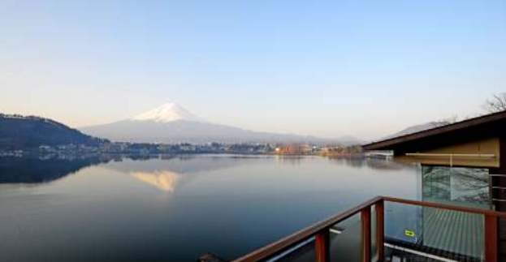
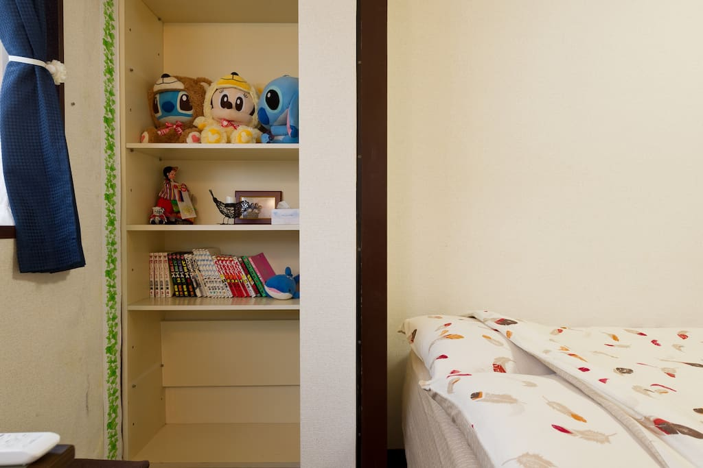

富士山
景点地址:
〒418-0112 静岡県富士宮市北山
开放时间：
全天开放，但只在夏季开放登山，一般是7月-8月。
服务承诺：
如实描述 低价保障 入园保障 特殊退订保障
富士山非常值得去，景色迷人。拍出来的照片非常美。我是樱花季去的，满山遍野的樱花衬托的更加美丽。从东京市区过去距离也不是很远。
----------------------------------------------------------------------------------------------------------------------------------------------------------------------------------------------------------------------------------------------------------------------------------------
富士山是日本国内的最高峰，也是世界上最大的活火山之一，主峰海拔高达3776公尺。富士山山体呈圆锥状，太古时代反复喷发堆积形成山体，火山喷发物层层堆积，成为锥状成层火山。山顶有巨大的火山口，直径约800米，深约200米。富士山作为日本民族的象征之一，在全球都享有盛誉。富士山被日本人民誉为“圣岳”，是日本民族引以为傲的象征。富士山山体高耸入云，山巅白雪皑皑，放眼望去，富士山是那么的雄伟、壮观、气势磅礴。富士山从山脚到山顶，共划分为10个阶段，每个阶段是一个“合目”，山顶称“十合目”。每合目都设有供游人休息的地方，巴士最高可上到2305米的“五合目”。从“五合目”这里开始登山，一般需要几小时才能登上顶峰。如今，每年的7月-8月只开放一个月的时间可以登顶，其余时间养护都不开放无法登顶。 自古以来，这座山的名字就经常出现在日本传统的和歌中。日本诗人曾用“玉扇倒悬东海天”“富士白雪映朝阳”等诗句来赞美它。富士山也是世界上最大的活火山之一，自781年有文字记载以来，富士山共喷发了18次。最后一次喷发是在1707年，此后休眠至今。
人文历史:
----------------------------------------------------------------------------------------------------------------------------------------------------------------------------------------------------------------------------------------------------------------------------------------
富士山自古以来被誉为灵峰，特别是在山顶部分设有浅间神社，被视为神圣的象征。因为暂时没有喷发，根据日本律令制设置了浅间神社用来祭祀，并确立了浅间信仰。
在日本古代诗歌集《万叶集》，有许多以富士山有关的文学作品，其中山部赤人的短歌最为著名：
“ 田子の浦ゆ うちいでてみれば 真白にぞ ふじの高岭に 雪は降りける ”
能够考证富士山喷发年代的最早的文字记录，是《续日本纪》，书中记录了781年(天应元年)从富士山喷出的火山灰。在平安时代初期创作的《竹取物语》也有相关记载可以了解到当时的富士山是一座活火山。
自公元781年有文字记载以来，共喷发过18次，最后一次是1707年，此后变成休眠火山。
在江户时代，1707年12月16日的宝永山大喷发在江户城中落下了大量的火山灰。关于这次喷发，留存有大量的文字和图画记录。
绘画江户时代日本著名的浮世绘画家葛饰北斋以富士山为题材创作了46幅的连续版画《富岳三十六景》(约1831年)。当初画家计划按照题名只画36幅，但后来因广受欢迎，又加画了10幅。其中，描绘了富士山雄美壮观的作品《凯风快晴》和《山下白雨》等都广为人知，这两幅画也被人亲切地称为“赤富士”与“黑富士”。(《富岳三十六景》之中，还有一幅描绘海浪的《神奈川冲浪里》的杰作非常有名)。
免责声明：本文部分图片选取自网络，如侵权请联系删除，联系邮箱kf@tianqi.com
3、动作缓慢却能让心脏病发作的戏剧 日本的能剧和狂言的产生可以追溯到8世纪。能剧是近乎静止的艺术，不过绝对不必担心是否会睡着，需要担心的只是心脏能否受得住剧中的刺激：或许是空洞的长笛发出的刺入骨髓的一声呼啸，又或许是突如其来的一个惊天击鼓!
4、 日本婚礼新郎“扔”着玩 以前，在日本的一些贫穷农村里，漂亮的姑娘大多嫁到外村，同村的小伙子只能“望美兴叹”。于是，他们对来迎娶的新郎心怀“恨意”，想办法进行报复。小伙子们会把新郎抬到山坡上，然后猛地抛下，而且抛的越高，表示新娘越漂亮!
风俗习惯:
----------------------------------------------------------------------------------------------------------------------------------------------------------------------------------------------------------------------------------------------------------------------------------------
1、要命的日本“裸体节” 裸体节又叫“会阳节”，参加者都是男性，他们只系日本传统的兜裆布，几近全裸。这一活动开始于江户时代末期。
2、晚上骑自行车要开“车大灯” 自行车在日本被称为“自转车”，是日本学生、家庭主妇以及在日留学生的首选。但是，初次在日本骑自行车或与会有些不习惯，日本社会对于骑自行车有着不少的“规定”。 在日本夜间骑自行车要求开“车大灯”，违者被警察发现的教育比骑车带人还严格。在日本骑自行车要注意的第二点，就是每辆自行车都会有自己的“身份证”，就好像汽车的车牌照一样。在日本，哪怕是破旧的不像样的自行车，你都不能去捡来骑，因为捡没有来历的车，在日本被认为等同于“偷窃”。
特产推荐:
----------------------------------------------------------------------------------------------------------------------------------------------------------------------------------------------------------------------------------------------------------------------------------------
1、富士宫炒面富士宫炒面的发祥地位于静冈县的东部，富士山山脚下的富士宫市。富士宫炒面使用了口感独特，富有弹性的蒸面，用榨好的猪油剩下的肉膘做成味道丰富的油梭子，完成后撒上沙丁鱼粉就可以享用了。
2、厚木炭烤肥肠
因为许多人喜欢肥肠。一边喝着啤酒、一边品尝该美食，收到的评语里很多都提到了这一点。
3、明石烧
“兵库 明石烧”的当地支持者非常多。果然是原汁原味的地方特色啊。“静冈 绵绵蒸蛋”虽然落选，但奇妙的名字为很多人所喜爱。
兵库县南部的明石市，是日本标准时子午线通过的地方，以章鱼等一些水产物，特产品而闻名。明石鸡蛋烧，用特产品的章鱼和鸡蛋，海带和鲣鱼煮出的汤汁，精致的米粉，小麦粉做成的元祖章鱼烧，堪称兵库县明石市的当地料理。乍一看，与大阪名产章鱼烧十分相似。不过，在2018年已有约160年历史的明石烧，才是真正的鼻祖。最早是明石市的一个路边小摊贩发明的，因为味道很好而渐渐广为熟知，还有人从大阪特意跑来明石市去参观。
当地酒店:
----------------------------------------------------------------------------------------------------------------------------------------------------------------------------------------------------------------------------------------------------------------------------------------
新宿!步行 2 分钟到车站!提供 WIFI!上午 10 点可入住!
----------------------------------------------------------------------------------------------------------------------------------------------------------------------------------------------------------------------------------------------------------------------------------------
设施/服务:
整套房子/公寓:独享整个房源，无需与房东或他人共住
入住/退房:入住时间 10:00后 · 退房时间 10:00
自助入住:通过密码钥匙盒自助入住
烘干机 生活必需品
暖气 洗衣机
厨房用品 厨房
早餐 床和浴室
吹风机 衣架
洗发水 安全设施
灭火器 一氧化碳报警器
烟雾报警器 急救包
----------------------------------------------------------------------------------------------------------------------------------------------------------------------------------------------------------------------------------------------------------------------------------------
离新宿 10 分钟距离｡免费的家用和便携式 Wifi｡可住 7 人

----------------------------------------------------------------------------------------------------------------------------------------------------------------------------------------------------------------------------------------------------------------------------------------
设施/服务:
整套房子/公寓:独享整个房源，无需与房东或他人共住
基础设施
无线网络 入住/退房，入住时间: 15:00后 ·
退房时间: 12:00
自助入住:通过密码锁自助入住
熨斗 有线电视
生活必需品 书桌/工作区域
综合设施 电梯
厨房用品 厨房
基本厨具 盘子和餐具
冰箱 炉灶
房客使用权限 密码锁
独立入口
用户点评:
----------------------------------------------------------------------------------------------------------------------------------------------------------------------------------------------------------------------------------------------------------------------------------------
4分我能说我没有看到富士山吗驱车一百多公里，赶上大阴天，日本有人告诉我，远观富士的最佳地点，估计今天是看不到了。不过，我感受到了，它应该就在我对面，哈哈。我还会来，下次一定见。朋友说，附近这家水果店很实惠（日本水果真的很贵），还有山下小村里这家鳗鱼饭，好吃，推荐。
般若不若 2019-09-22 17:04
4分
富士山是日本的最高峰，也是全日本的象征。可以在东京晴空塔上，新干线列车上，箱根缆车上等各种角度看到富士山。而富士山远观的效果似乎更好些！
11****881 2019-09-19 18:48
5分
九月初去了爬富士山，在河口湖住宿一晚后，第二天早上自驾到富士山停车场换千乘专缐巴士到五合目。幸运的是，当天天气非常不错，六点左右到达五合目可以清晰看见富士山顶。在停车场拍了几张照，並到商店买了支木制登山杖，就开始爬山。 我是选择吉田缐，五合目至六合目已经可以看到云海。早上晨光打落在一片堆疊密密麻麻的云床上非常美丽。到达六合木才会有管理站向遊人收1000円登山费，管理员亦会派发小册子及给你一个引有富士山的小木牌以作纪念。上山沿途会有休息站可以补给物资，就是价格会比平地贵，一瓶水600ml左右要500円。 整条吉田路缐，除了七合目到八合目那段，需要手脚共用的爬上岩上前进，其他路段都是较平坦的泥石路，只是高山的关系，心跳会自然加快，走路会比平地易疲倦。只要步速因应自己的身体狀况去调校，其实要爬到十合目並不困难和辛苦。倒过来，下山才是对膝盖的最大考验，边走带滑的走下漫长急斜的泥石滑坡，加重双脚的负荷。 另外，打算到山顶绕一圈的话，真的需要准备足够御寒衣物，九月初山顶上也只有几度而已，加上刮大风容易造成失温。我也是直到爬到顶时才由短袖再添加一件抓毛和冲峰衣才可以。 整体而言，富士山真的非常值得去爬。下次时间许可，我一定会在山上留宿待到看日出。
M31****8924 2019-09-09 09:08
5分
富士山是日本的象征，一年四季都有不同的看点，每年四五月分富士山是最好看的有樱花还有一半的积雪，特别漂亮，夏天的话虽然没有积雪了但是可以攀登富士山，感受下日本最高峰的感觉
东京小王子 2019-09-06 00:05